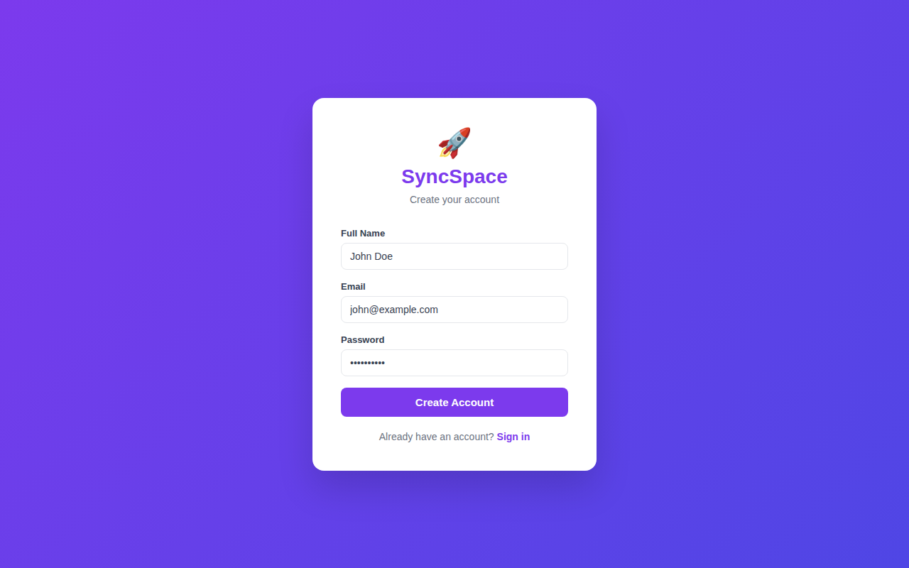
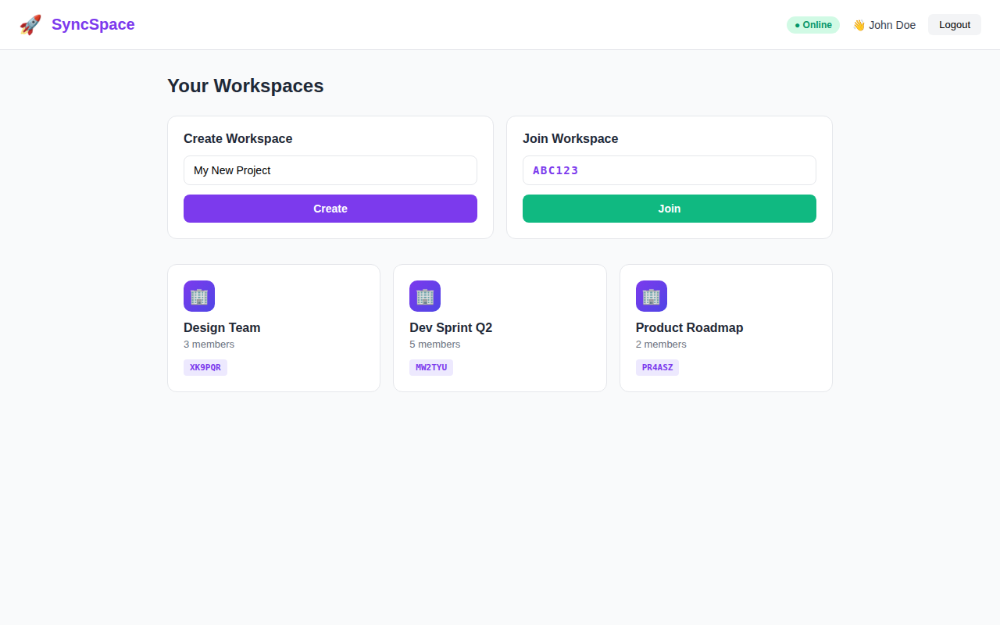
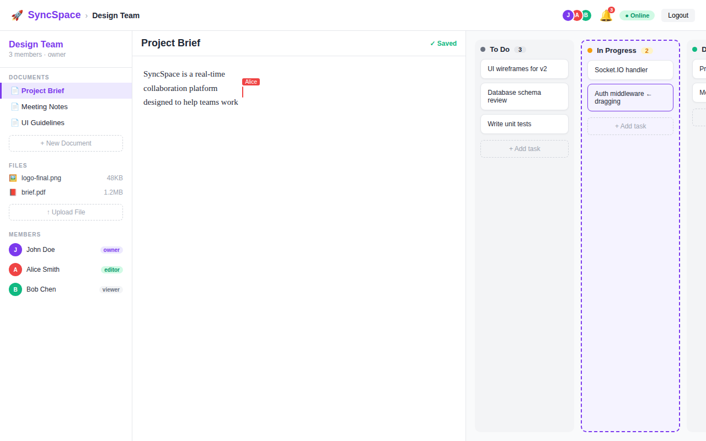
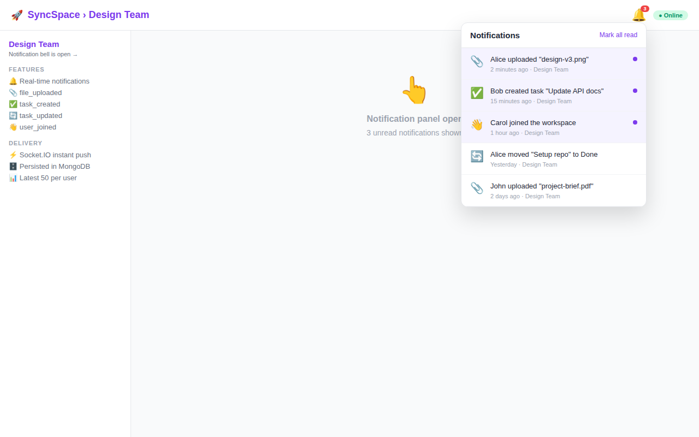
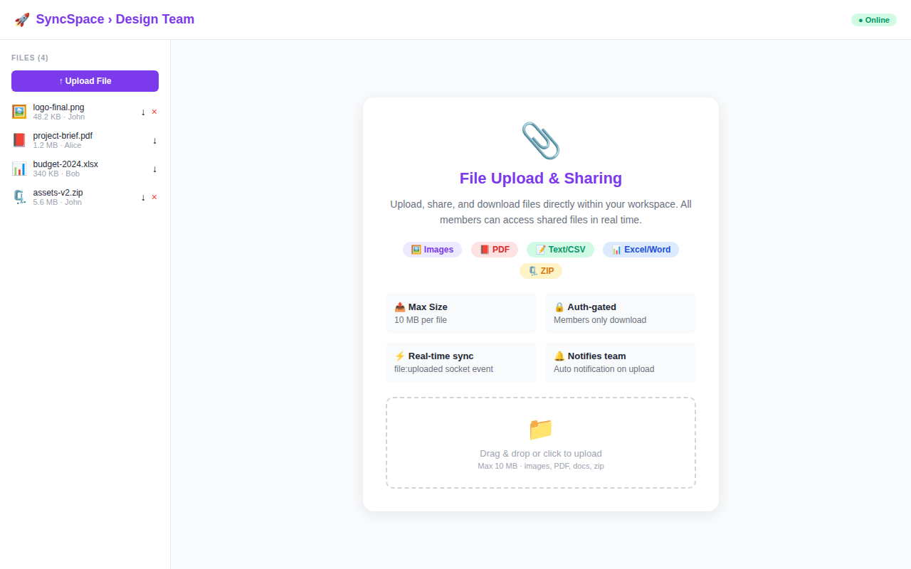

Purple gradient login screen with email/password form, SyncSpace branding, and link to sign-up. JWT stored as HttpOnly cookie on success.
JWT AuthHttpOnly CookieRate Limited

Screen 02
Sign Up Page
Create a new account with full name, email, and password (min 6 chars). Password is bcrypt-hashed with 12 rounds before storage.
bcrypt 12 roundsInput Validation

Screen 03
Dashboard
View all your workspaces as cards with name, member count, and invite code. Create new workspaces or join existing ones with a 6-character invite code.
Create WorkspaceJoin by CodeWorkspace CardsOnline Status

Screen 04
Workspace — Main 3-Panel View
The core workspace layout: left sidebar (documents, files, members), centre document editor with live cursor presence, and right Kanban board with drag-and-drop. Shows member avatars, notification bell with badge, and online status in the top bar.
Live EditingCursor PresenceKanban BoardDrag & DropFile ListMembers

Screen 05
Real-time Notifications
🔔 bell icon with red unread-count badge opens a dropdown listing recent notifications. Unread items highlighted purple. Types: file_uploaded, task_created, task_updated, user_joined. Delivered instantly via Socket.IO to a personal user:{id} room.
Socket.IO Push4 Event TypesMark as ReadPersisted MongoDB

Screen 06
File Upload & Sharing
Upload files up to 10 MB (images, PDF, Office docs, CSV, ZIP). File list in sidebar shows type icon, size, and uploader. Download and delete buttons per file. Upload broadcasts a file:uploaded event to all members and sends notifications.
When network drops, a yellow banner appears and the status badge turns red. All document edits and task moves are queued in IndexedDB. When connection returns, the sync queue flushes automatically. Service Worker caches static assets for instant load.
Service WorkerIndexedDB QueueAuto SyncOffline BannerPWA